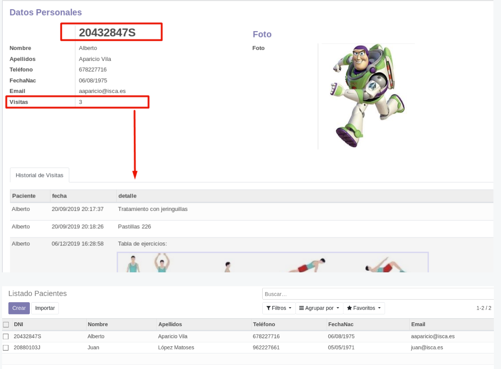
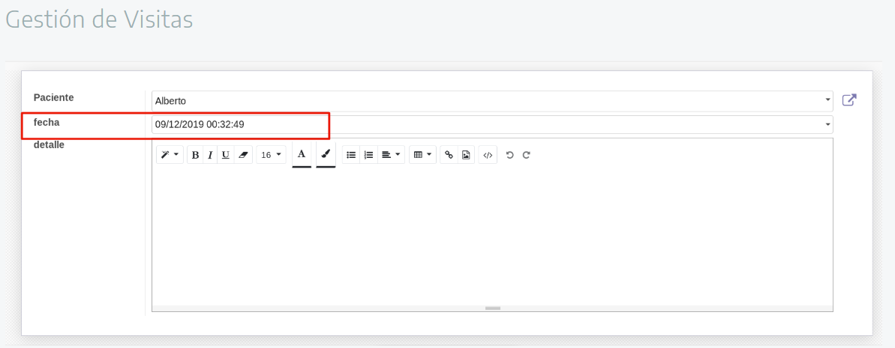

Actividad: Control de Pacientes en una Clínica
🎯 Objetivo
Diseñar y construir un mini-módulo en Odoo con dos modelos:
1. Pacientes
2. Historial de visitas
El módulo debe permitir gestionar los pacientes de una clínica y mostrar un historial de visitas en la ficha de cada paciente, con vistas y menús básicos.


1) Alcance funcional
1.1 Modelo: Paciente
- Identificador (ej. DNI/NIF) obligatorio y único.
- Campos: Nombre, Apellidos, Teléfono, Fecha de nacimiento, Email, Foto.
- Campo contador de visitas visible en la ficha.
- Campo de estado activo/inactivo.
- Relación con el historial de visitas (One2many).
1.2 Modelo: Visita (Historial)
- Campo paciente relacionado (Many2one).
- Fecha/hora de la visita.
- Detalle o descripción del tratamiento.
- Adjuntos opcionales (imagen/documento).
1.3 Reglas y validaciones
- Unicidad del DNI/NIF (con
_sql_constraints). - Validaciones con
@api.constrains(ejemplo: longitud mínima del nombre). - Definir comportamiento al borrar (
ondelete).
2) Relaciones esperadas
- Paciente 1 — N Visitas
paciente_iden Visita (Many2one a Paciente).visita_idsen Paciente (One2many inverso).
3) Vistas y navegación
3.1 Menús
- Menú principal: Clínica
- Submenú: Pacientes (lista de pacientes).
- Submenú: Historial de visitas (lista de visitas).
3.2 Vistas requeridas
- Lista de Pacientes (tree): DNI, Nombre, Apellidos, Teléfono, Fecha Nac., Email.
- Formulario de Paciente (form):
- DNI destacado, contador de visitas.
- Datos personales agrupados.
- Foto en sección lateral.
- Pestaña "Historial de Visitas" con One2many a visitas.
- Lista de Visitas (tree): Paciente, Fecha, Detalle.
- Formulario de Visita (form): Paciente, Fecha, Detalle, adjuntos.
4) Atributos y parámetros a definir
Cada campo debe especificar:
- Tipo (Char, Text, Datetime, Image, Many2one, One2many…).
- Etiqueta (string), obligatoriedad (required), índice (index), valores por defecto (default).
- Reglas (_sql_constraints, @api.constrains).
- Relaciones: comodel_name, inverse_name, ondelete, help.
- Para el contador de visitas: decidir si es calculado o actualizado por lógica.
5) Seguridad y acceso
- Archivo
ir.model.access.csvcon permisos de lectura/escritura para usuarios y administradores. - Opcional: reglas de registro según grupos.
6) Entregables
- Documento de diseño con:
- Nombres técnicos de los modelos (
_name), campos y relaciones. - Diagrama o tabla de relaciones.
- Reglas de validación propuestas.
- Nombres técnicos de los modelos (
- Módulo Odoo con:
__manifest__.py, carpetasmodels/,views/,security/.- Modelos y relaciones implementados.
- Vistas (tree, form), menús y acciones.
- Capturas mostrando:
- Lista de pacientes.
- Formulario de paciente con foto, contador y pestaña de historial.
- Lista y formulario de visitas.
7) Retos opcionales
- Campo calculado con la edad del paciente o el nº de visitas.
- Botón inteligente en Paciente para abrir historial filtrado.
- Adjuntos en visitas.
- Validación de formato de DNI/NIF o teléfono.
- Filtros por fecha de visita o paciente en las búsquedas.